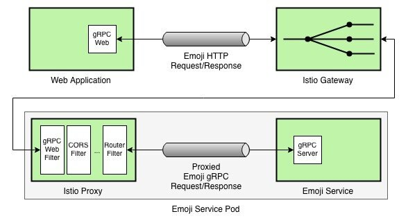
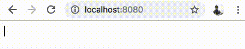

gRPC-Web使Web应用能够通过类似于Envoy的代理访问gRPC后端。Envoy是Istio的默认代理，因此，我们可以利用Istio的EnvoyFilter构件来创建无缝连接的云原生应用。
介绍
在这篇文章中，我将引导你构建一个简单的Web应用，使用emoji替换用户输入文本中的关键字，并使用gRPC-Web和Istio与gRPC后端进行通信。
以下是我们创建emoji应用的步骤大纲：
- 使用Protobuf定义协议格式；
- 编译Protobuf定义文件，来生成Go和JavaScript文件；
- 构建并测试基于Go的gRPC服务，该服务使用emoji替换输入文本中的关键字；
- 使用gRPC-Web为emoji服务创建Web界面；
- 配置EnvoyFilter并通过Istio部署后端；
- 部署Web应用程序并测试我们的emoji服务。
架构
让我们进一步理解emoji服务的最终架构是什么样子。

简而言之，只要用户提供一些文本，Web应用就会利用gRPC-Web库向Istio Gatway发送HTTP请求。然后，Istio网关将HTTP请求路由到emoji服务旁运行的Proxy sidecar，后者使用Envoy的gRPC-Web filter将HTTP调用转换成gRPC调用。
定义协议格式
首先，让我们使用Protobuf定义协议格式。
syntax = "proto3";
package emoji;
service EmojiService {
rpc Emojize (EmojizeRequest) returns (EmojizeReply);
}
message EmojizeRequest {
string text = 1;
}
message EmojizeReply {
string emojized_text = 1;
}
我们定义一个名为EmojiService的service，处理名为Emojize的rpc调用，该调用接受EmojizeRequest对象参数并返回一个EmojizeReply实例。
EmojizeRequest消息参数包含一个名为text的string类型的字段，表示用户输入的文本。同样，EmojizeReply包含一个名为emojized_text的string类型的字段，表示最终输出的字符，也即服务端将emoji关键字替换为emoji表情符号的输出内容。
编译Protobuf定义文件
我们先创建一个名为grpc-web-emoji/emoji/的项目目录结构，然后把前面的定义内容写入名为emoji.proto的文件。
然后编译emoji.proto文件并生成所需要的Go文件。
$ protoc -I emoji/ emoji/emoji.proto --go_out=plugins=grpc:emoji
同样，我们也生成JavaScript文件。
$ protoc -I emoji/ emoji/emoji.proto --js_out=import_style=commonjs:emoji \
--grpc-web_out=import_style=commonjs,mode=grpcwebtext:emoji
此时，您将获得如下所示的目录结构。
── grpc-web-emoji
└── emoji
├── emoji.pb.go
├── emoji.proto
├── emoji_grpc_web_pb.js
└── emoji_pb.js
构建和测试Go后端程序
现在让我们创建一个实现EmojiService API的Go程序。为此，我们使用以下内容创建一个名为main.go的文件。
package main
import (
"context"
"log"
"net"
proto "github.com/venilnoronha/grpc-web-emoji/emoji"
"google.golang.org/grpc"
"google.golang.org/grpc/reflection"
emoji "gopkg.in/kyokomi/emoji.v1"
)
// server is used to implement the EmojiService interface
type server struct{}
// Emojize takes a input string via EmojizeRequest, replaces known keywords with
// actual emoji characters and returns it via a EmojizeReply instance.
func (s *server) Emojize(c context.Context, r *proto.EmojizeRequest)
(*proto.EmojizeReply, error) {
return &proto.EmojizeReply{EmojizedText: emoji.Sprint(r.Text)}, nil
}
func main() {
// listen to TCP requests over port 9000
lis, err := net.Listen("tcp", ":9000")
if err != nil {
log.Fatalf("failed to listen: %v", err)
}
log.Printf("listening on %s", lis.Addr())
// register the EmojiService implementation with the gRPC server
s := grpc.NewServer()
proto.RegisterEmojiServiceServer(s, &server{})
reflection.Register(s)
if err := s.Serve(lis); err != nil {
log.Fatalf("failed to serve: %v", err)
}
}
我已经使用 kyokomi/emoji 库来完成繁重的工作，即将输入文本中的关键字转换为表情符号。
启动服务后如下所示：
$ go run -v main.go
2018/11/12 10:45:12 listening on [::]:9000
我们创建一个名为emoji_client.go的客户端，来实现通过程序测试emoji服务。
package main
import (
"log"
"time"
proto "github.com/venilnoronha/grpc-web-emoji/emoji"
"golang.org/x/net/context"
"google.golang.org/grpc"
)
func main() {
// connect to the server
conn, err := grpc.Dial("localhost:9000", grpc.WithInsecure())
if err != nil {
log.Fatalf("could not connect to the service: %v", err)
}
defer conn.Close()
// send a request to the server
ctx, cancel := context.WithTimeout(context.Background(), time.Second)
defer cancel()
c := proto.NewEmojiServiceClient(conn)
resp, err := c.Emojize(ctx, &proto.EmojizeRequest{
Text: "I like :pizza: and :sushi:!",
})
if err != nil {
log.Fatalf("could not call service: %v", err)
}
log.Printf("server says: %s", resp.GetEmojizedText())
}
我们现在可以运行emoji服务客户端，如下所示。
$ go run emoji_client.go
2018/11/12 10:55:52 server says: I like 🍕 and 🍣 !
瞧！gRPC版本的emoji服务如期工作了，现在是时候让Web前端启动并运行了。
使用gRPC-Web创建Web界面
首先，让我们创建一个名为index.html的HTML页面。该页面向用户显示一个文本编辑器，并调用一个emojize函数（我们稍后将定义）将用户输入发送到后端emoji服务。emojize函数还将消费后端服务返回的gRPC响应，并使用服务端返回的数据更新用户输入框。
<!DOCTYPE html>
<html>
<body>
<div id="editor" contentEditable="true" hidefocus="true" onkeyup="emojize()"></div>
<script src="dist/main.js"></script>
</body>
</html>
我们将如下所示的JavaScript代码放入名为client.js的前端文件。
const {EmojizeRequest, EmojizeReply} = require('emoji/emoji_pb.js');
const {EmojiServiceClient} = require('emoji/emoji_grpc_web_pb.js');
var client = new EmojiServiceClient('http://192.168.99.100:31380');
var editor = document.getElementById('editor');
window.emojize = function() {
var request = new EmojizeRequest();
request.setText(editor.innerText);
client.emojize(request, {}, (err, response) => {
editor.innerText = response.getEmojizedText();
});
}
请注意，EmojiServiceClient与后端emoji服务的连接地址是http://192.168.99.100:31380，而非http://localhost:9000。这是因为Web应用程序无法直接与gRPC后端通信，因此，我们将通过Istio部署我们的后端emoji服务。Istio将在Minikube上运行，其IP地址为192.168.99.100，默认的Istio Ingress HTTP端口为31380。
现在，我们需要一些库来生成index.html中引用的dist/main.js文件。为此，我们使用如下的npm package.json配置。
{
"name": "grpc-web-emoji",
"version": "0.1.0",
"description": "gRPC-Web Emoji Sample",
"devDependencies": {
"@grpc/proto-loader": "^0.3.0",
"google-protobuf": "^3.6.1",
"grpc": "^1.15.0",
"grpc-web": "^1.0.0",
"webpack": "^4.16.5",
"webpack-cli": "^3.1.0"
}
}
此时，我们使用如下命令来安装库并生成dist/main.js。
$ npm install
$ npx webpack client.js
通过Istio部署后端服务
我们现在可以将后端emoji服务打包到一个容器，并通过Istio进行部署。我们需要安装gRPC-Web EnvoyFilter，以便将后端gRPC服务的调用在gRPC和HTTP间转换。
我们使用如下内容的Dockerfile构建Docker image。
FROM golang:1.11 as builder
WORKDIR /root/go/src/github.com/venilnoronha/grpc-web-emoji/
COPY ./ .
RUN CGO_ENABLED=0 GOOS=linux go build -a -installsuffix cgo -v -o emoji-service main.go
FROM scratch
WORKDIR /bin/
COPY --from=builder /root/go/src/github.com/venilnoronha/grpc-web-emoji/emoji-service .
ENTRYPOINT [ "/bin/emoji-service" ]
CMD [ "9000" ]
EXPOSE 9000
我们可以如下所示build image，并将其推送到Docker Hub：
$ docker build -t vnoronha/grpc-web-emoji .
$ docker push vnoronha/grpc-web-emoji
接下来，我们定义Kubernetes Service和Deployment配置，如下所示，并命名为backend.yaml。
apiVersion: v1
kind: Service
metadata:
name: backend
labels:
app: backend
spec:
ports:
- name: grpc-port
port: 9000
selector:
app: backend
---
apiVersion: extensions/v1beta1
kind: Deployment
metadata:
name: backend
spec:
replicas: 1
template:
metadata:
labels:
app: backend
version: v1
spec:
containers:
- name: backend
image: vnoronha/grpc-web-emoji
imagePullPolicy: Always
ports:
- containerPort: 9000
注意，一旦我们通过Istio部署此服务，由于Service ports name中的grpc-前缀，Istio会将其识别为gRPC服务。
由于我们希望将gRPC-Web filter安装在backend sidecar代理上，因此我们需要在部署backend服务之前安装它。EnvoyFilter配置如下所示，我们将其命名为filter.yaml。
apiVersion: networking.istio.io/v1alpha3
kind: EnvoyFilter
metadata:
name: grpc-web-filter
spec:
workloadLabels:
app: backend
filters:
- listenerMatch:
listenerType: SIDECAR_INBOUND
listenerProtocol: HTTP
insertPosition:
index: FIRST
filterType: HTTP
filterName: "envoy.grpc_web"
filterConfig: {}
接下来，我们需要定义一个Istio Gateway来将HTTP流量路由到后端服务。为此，我们将以下配置写入名为gateway.yaml的文件。
apiVersion: networking.istio.io/v1alpha3
kind: DestinationRule
metadata:
name: backend
spec:
host: backend
subsets:
- name: v1
labels:
version: v1
---
apiVersion: networking.istio.io/v1alpha3
kind: Gateway
metadata:
name: gateway
spec:
selector:
istio: ingressgateway
servers:
- port:
number: 80
name: http
protocol: HTTP
hosts:
- "*"
---
apiVersion: networking.istio.io/v1alpha3
kind: VirtualService
metadata:
name: vs
spec:
hosts:
- "*"
gateways:
- gateway
http:
- match:
- port: 80
route:
- destination:
host: backend
port:
number: 9000
subset: v1
corsPolicy:
allowOrigin:
- "*"
allowMethods:
- POST
- GET
- OPTIONS
- PUT
- DELETE
allowHeaders:
- grpc-timeout
- content-type
- keep-alive
- user-agent
- cache-control
- content-type
- content-transfer-encoding
- custom-header-1
- x-accept-content-transfer-encoding
- x-accept-response-streaming
- x-user-agent
- x-grpc-web
maxAge: 1728s
exposeHeaders:
- custom-header-1
- grpc-status
- grpc-message
allowCredentials: true
注意，为了能让gRPC-Web正常工作，我们在这里定义了一个复杂的corsPolicy。
我们现在可以按以下顺序简单地部署上述配置。
$ kubectl apply -f filter.yaml
$ kubectl apply -f <(istioctl kube-inject -f backend.yaml)
$ kubectl apply -f gateway.yaml
backend pod启动之后，我们可以验证gRPC-Web filter在sidecar代理中的配置是否正确，如下所示：
$ istioctl proxy-config listeners backend-7bf6c8f67c-8lbm7 --port 9000 -o json
...
"http_filters": [
{
"config": {},
"name": "envoy.grpc_web"
},
...
部署和测试Web前端
我们现在已经到了实验的最后阶段。我们通过Python启动一个HTTP服务，来为我们的Web应用提供服务。
$ python2 -m SimpleHTTPServer 8080
Serving HTTP on 0.0.0.0 port 8080 ...
让我们前往emoji web页面http://localhost:8080.
如果一切顺利，你将拥有一个功能完整的基于gRPC-Web的Web应用，如下所示。

如果你在Chrome等浏览器上打开开发者工具，你将会看到如下所示的gRPC-Web HTTP请求。
结论
gRPC-Web提供了一种将gRPC服务的优势带给Web应用的好方法。它目前需要一个中间代理，如Istio数据平面（即Envoy代理），以便将数据在HTTP和gRPC之间转换。然而，一旦我们准备好了基础架构，开发人员就可以无缝使用gRPC构建Web应用。
参考
- gRPC-Web Hello World指南
- WebpageFx Emoji清单